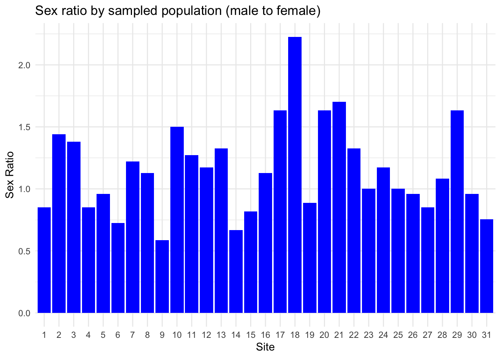
Final Exam for ENVS 543 Fall 2024
Abstract
This study seeks to determine the extent to which changing climate may have impacted sex ratio divergence among locations in the Sonora Desert bark beetle, Araptus attenuatus. Habitat suitability - both observed present day and estimated for the Last Glacial Maximum - is considered at a number of different sites.
Methods
Data collection and variables
To gather the data of males and females present, five plants at 31 sampling locations were randomly selected and the number of beetles of each sex counted on each plant. Additional quantitative traits of Phenotype A and Phenotype B were also recorded for each beetle. This data was used to calculate the total sex ratio at each site.
Present day habitat suitability at each site was determined by an index developed through Niche Modeling using observed biological and climatic conditions. Historical habitat suitability was estimated using the same Niche Modeling method combined with reconstructed climate data from the Last Glacial Maximum (~20,000 years ago).
The variables examined were sex ratio, Phenotype A, Phenotype B, observed present day habitat suitability, and estimated historical habitat suitability at each of 31 sites.
Statistical tests performed
The sex ratio at each site was calculated by summarizing the number of males and number of females at each site, then dividing the number of males by the number of females. Each plant was considered replicated within each site in order to achieve this calculation. A Pearson’s chi-squared test was performed to test the null hypothesis that there is no difference between the sex ratios at each site. The sex ratio at each site was then reviewed to determine which sites have sex ratios that deviate from equal proportions of males and females.
To create a model describing the functional relationship between habitat suitability and sex ratio I first extracted the habitat suitability index from the raster file and matched that index to each of the sampled populations (sites). During this process, Site 21 returned a habitat suitability value of NA, so it was excluded from the data set prior to further analysis. The response variable (sex ratio) and predictor variable (habitat suitability) were examined for normality by visually assessing a normal Q-Q plot and performing a Shapiro-Wilk normality test.
A linear regression model (sex ratio ~ habitat suitability) was then fitted to the data. Four diagnostic plots were examined to assess normality of residuals, any overly influential data points, linearity, and homoscedasticity.
Two additional predictor variables (phenotype A and phenotype B) were added to the model to determine if they improved the functional relationship between sex ratio and habitat suitability. The mean phenotype A and phenotype B were summarized at each site and then examined for normality by visually assessing a normal Q-Q plot and performing a Shapiro-Wilk normality test. To assess the relative fit of the three different linear models, I calculated the Akaike Information Criterion (AIC) for each model. I then computed the deltaAIC values by subtracting the AIC of the best-fitting model from the AIC of each other model. These values were used to compare the models’ performance, with lower AIC and deltaAIC values indicating better fit. The results are summarized in Table 1.
To determine whether - and how much - habitat suitability has changed at each site since the Last Glacial Maximum I first extracted the historical habitat suitability index from the historical raster file and matched the index to each of the sites. The degree of change was calculated by subtracting the habitat suitability index from the Last Glacial Maximum from the habitat suitability index observed in present day. The results are summarized in Table 2 and sorted in descending order from most positive change to most negative change.
The function predict() was used to generate predicted sex ratio values at each site based on the habitat suitability index data from the Last Glacial Maximum. This function used the coefficients from the linear regression model fitted to our present day observed data. The residuals were plotted to assess the quality of the model fit. A histogram plot was used to compare the distributions of the observed and predicted sex ratios. Finally, the geographic distribution of the different habitat suitability indices and the corresponding observed and predicted sex ratios were plotted on maps of Baja California Sur.
The statistical software R was used to perform all data wrangling and statistical analysis.
Results
Do the different sampled populations exhibit different sex ratios?
A Pearson’s chi-squared test performed to determine whether any site (sampled population) had a male to female ratio different from any of the other male to female ratios produced a p-value of 7.968e-05 (df = 30). As such, I reject the null hypothesis that there is no difference between the sites in male to female sex ratio. Most of the sites have male to female sex ratios that differ from each of the other sites.
Which sites have sex ratios that deviate from equal proportions of males and females?
Plotting the sex ratio at each site reveals that only two sites - Site 23 and Site 25 - had observed sex ratios of equal proportion males and females.
Is there a functional relationship between the habitat suitability at the sampling locations and the sex ratio?
The results of a Shapiro-Wilk normality test of the response variable sex ratio (p = 9.579e-02) showed this data is consistent with a normal distribution. The Q-Q plot of the response variable data also showed this data as relatively normal: nearly all the data points follow the reference line.
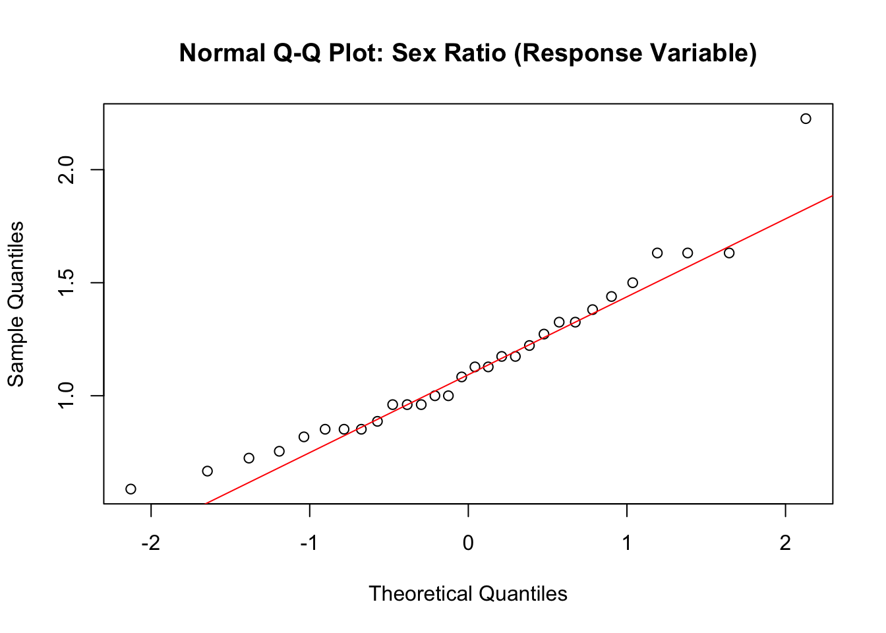
The results of a Shapiro-Wilk normality test of the predictor variable habitat suitability (p = 1.495e-01) showed this data to be of a normal distribution, as well. However, the Q-Q plot of the predictor variable shows skewing along the right half of the reference line. While the Shapiro-Wilk test gave a significant result indicating normality, these results should be viewed with caution given the skew of the Q-Q plot for this predictor variable.
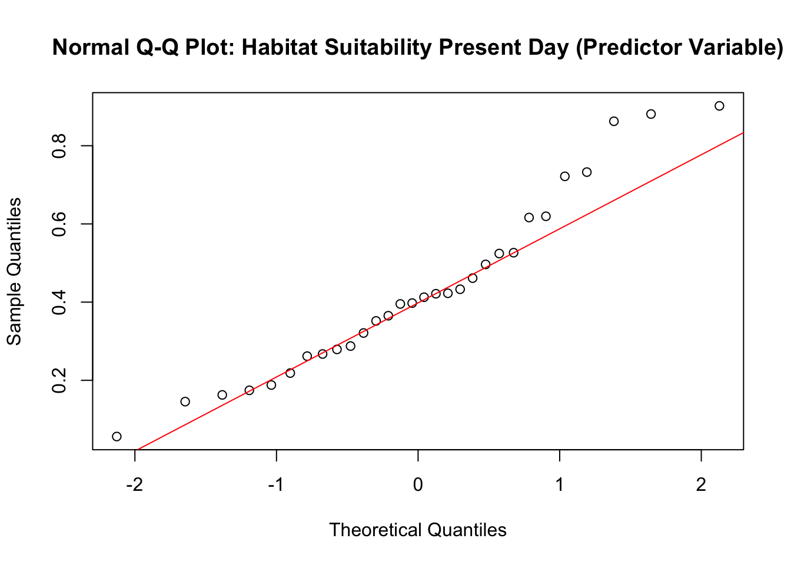
The null hypothesis for the linear regression model (sex ratio ~ habitat suitability) was that there is no functional relationship between habitat suitability and sex ratio. The alternative hypothesis was that there is a functional relationship between habitat suitability and sex ratio. The results of the linear regression model (p = 3.332e-02, F = 5.011, df = 1 and 28) indicate there is a statistically significant functional relationship between habitat suitability and sex ratio and as such, I reject the null hypothesis. The results of the model are that habitat suitability plays a moderate role in explaining the variability in sex ratio, about 15% (R2 = 0.1518). The slope of the model (slope = -0.6173) indicates that as habitat suitability at a site increases, the male to female ratio at that site decreases. This means there are more females than males at sites with higher habitat suitability indices and this ratio increases as the habitat becomes more and more suitable.
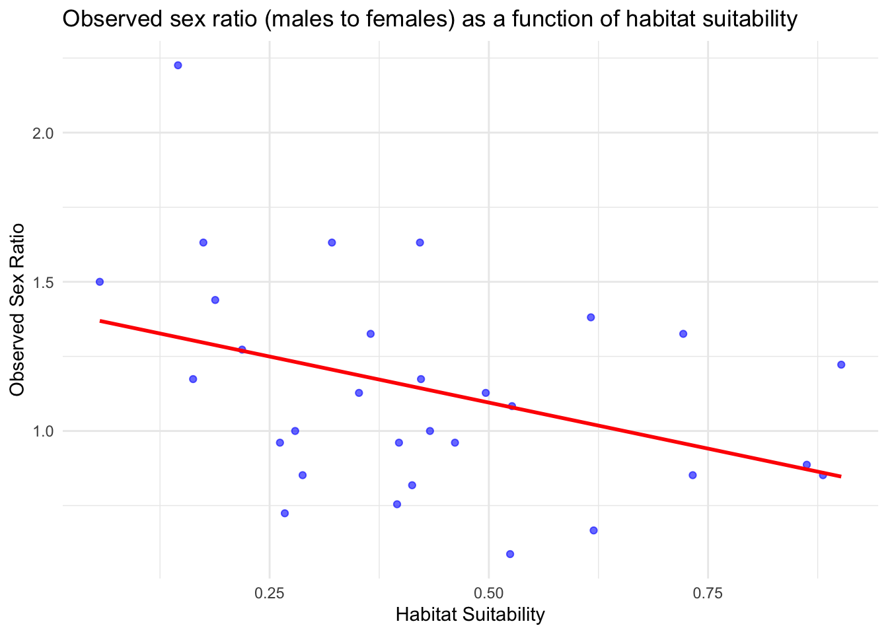
A diagnostic Residuals vs Fitted plot shows that the model residuals are mostly linear in nature. They follow a somewhat horizontal line across the plot. The normal Q-Q plot of the model residuals shows the residuals are fairly normal. They fall along the reference line with one outlier - Site 10 - pulling away from the reference line in the right half of the plot. A diagnostic Scale-Location plot indicates there is likely homoscedasticity among the residuals in this regression model. The points roughly follow a horizontal line across the plot. A diagnostic Residuals vs Leverage plot did not identify any overly influential points in our dataset falling outside of the Cook’s distance (0.05) boundaries, though data from Sites 10, 28, and 27 are flagged by the plot as being potential outliers.
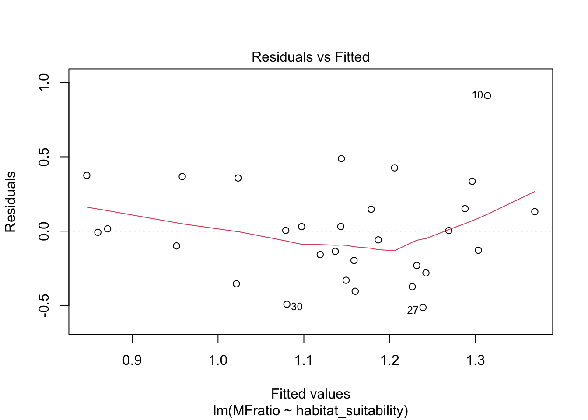
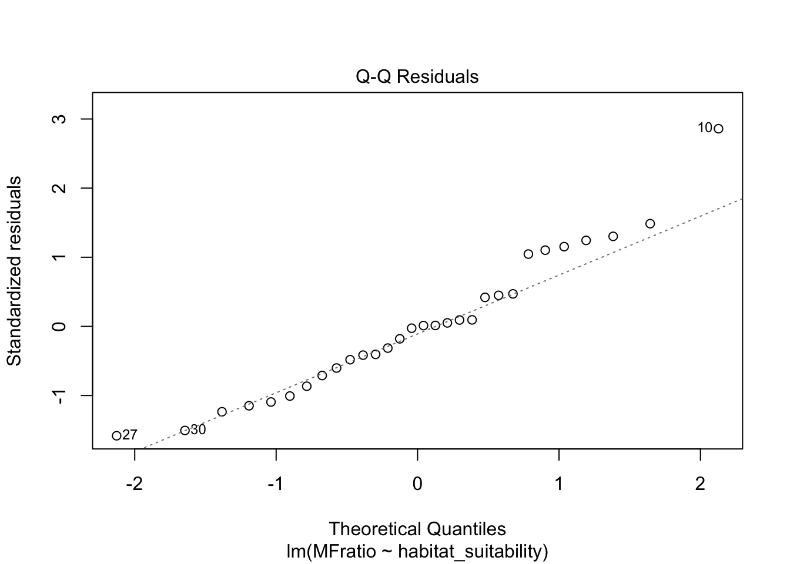
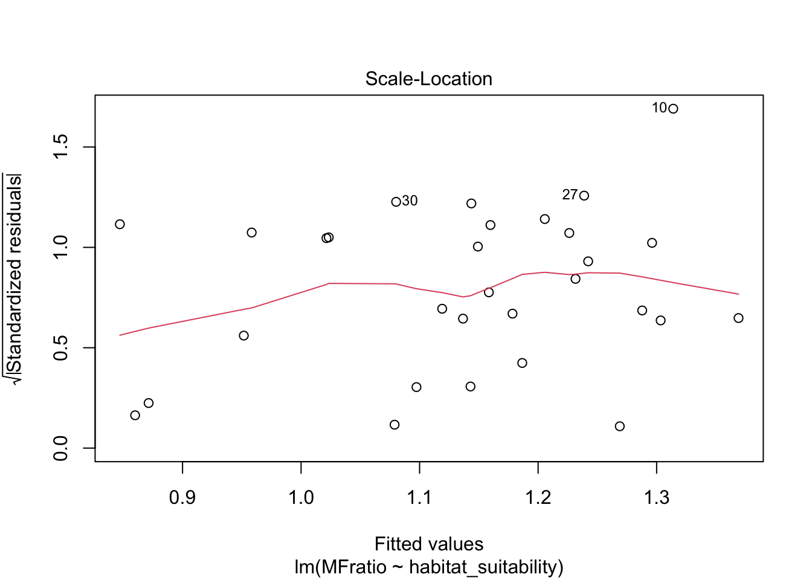
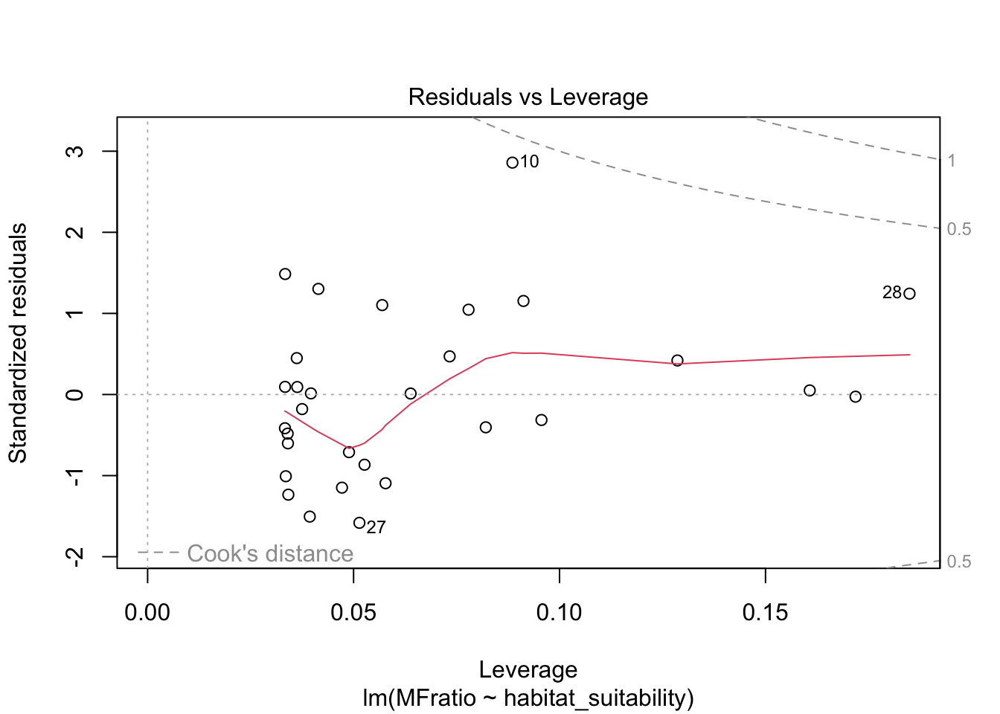
Does the inclusion of Phenotype A or Phenotype B as predictor variables improve the functional relationship over habitat suitability alone?
Prior to adding the new predictor variables of Phenotype A and Phenotype B, the variables were first tested for normality using Q-Q plots and Shaprio-Wilk tests. The Shapiro-Wilk test for the predictor variable Phenotype A gave a result of p = 9.191e-03. This p-value indicates the Phenotype A predictor variable is not of a normal distribution. Therefor, any results from a regression model including this predictor variable should be viewed with caution.
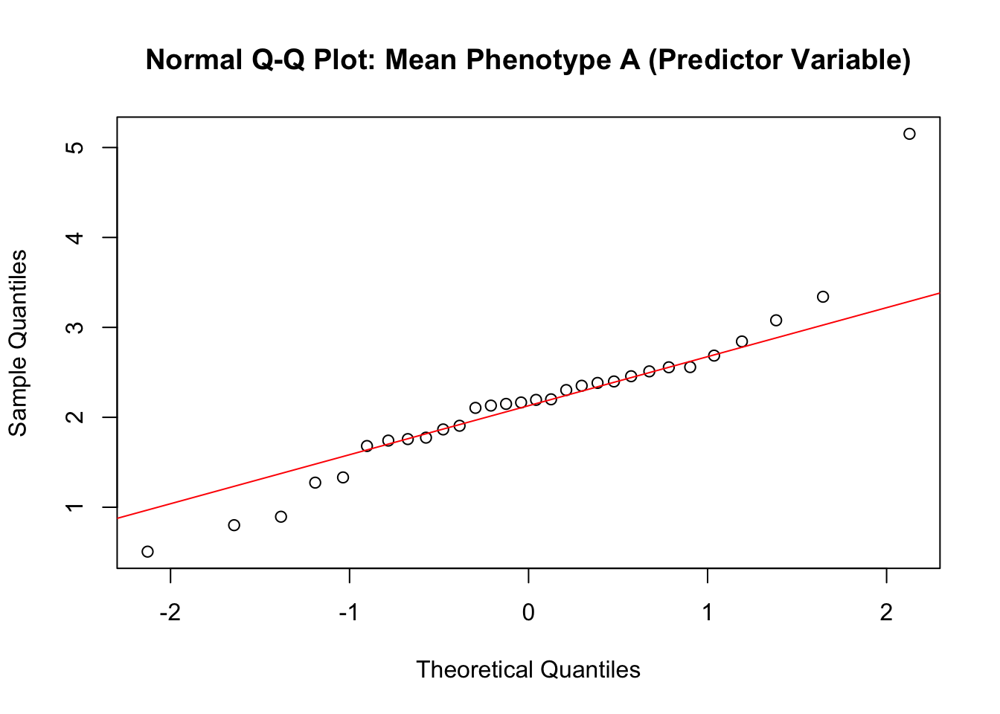
The Shapiro-Wilk test for the predictor variable Phenotype B gave a result of p = 2.505e-01 which indicates this predictor variable does have a normal distribution. This result aligned visually with the Q-Q plot of this predictor variable.
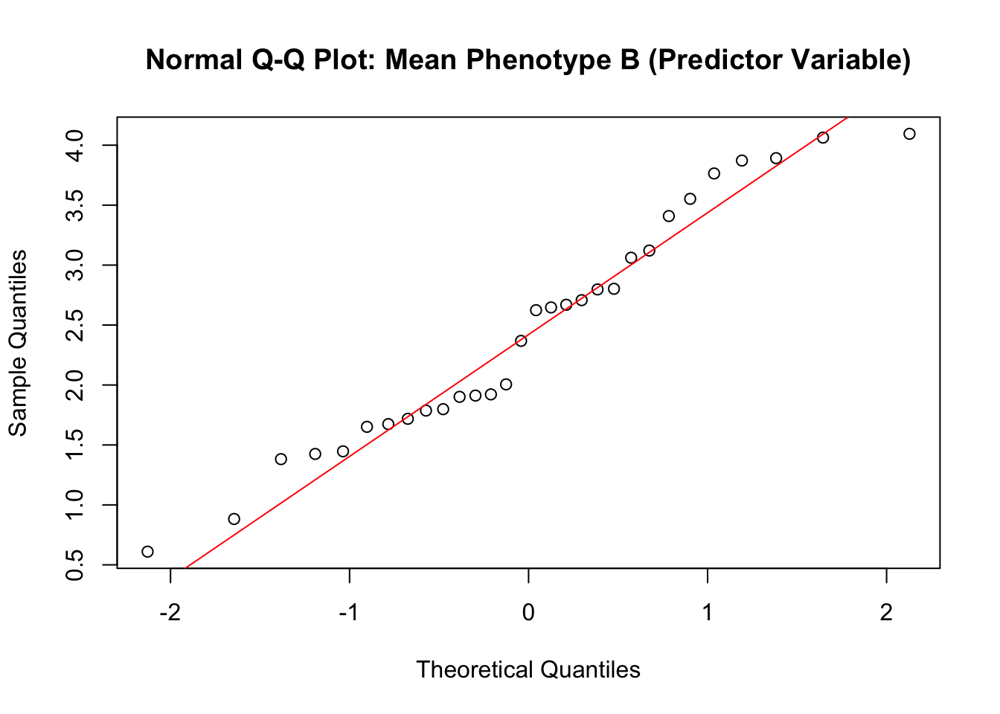
The linear regression models using habitat suitability, Phenotype A and Phenotype B as predictor variables were compared to the linear regression model using habitat suitability alone as the predictor variable. Neither of the additional predictor variables strengthened the model when compared to habitat suitability alone. The model with habitat suitability as the single predictor variable produced a p-value of 3.332e-02 and an AIC of 23.28. The p-values for the other models (p =3.655e-02 for Phenotype A and p = 3.069e-02 for Phenotype B) were significant but produced higher AIC values. As such, the model with habitat suitability as a single predictor variable is the top model.
| Model | R2 | P | AIC | DeltaAIC |
|---|---|---|---|---|
| Sex Ratio ~ Habitat Suitability | 0.152 | 3.33e-02 | 23.277 | 0.000 |
| Sex Ratio ~ Habitat Suitability + Phenotype A | 0.152 | 3.65e-02 | 25.263 | 1.986 |
| Sex Ratio ~ Habitat Suitability + Phenotype B | 0.181 | 3.07e-02 | 24.242 | 0.965 |
Has the habitat suitability at each location changed from the Last Glacial Maximum to the present day?
The habitat suitability at each location has changed from the Last Glacial Maximum to the present day. Slightly more sites (17 of 30) experienced an increase rather than a decrease (13 of 30) in habitat suitability between the Last Glacial Maximum and present day. However, the decreases in habitat suitability - where they did occur - were more extreme.
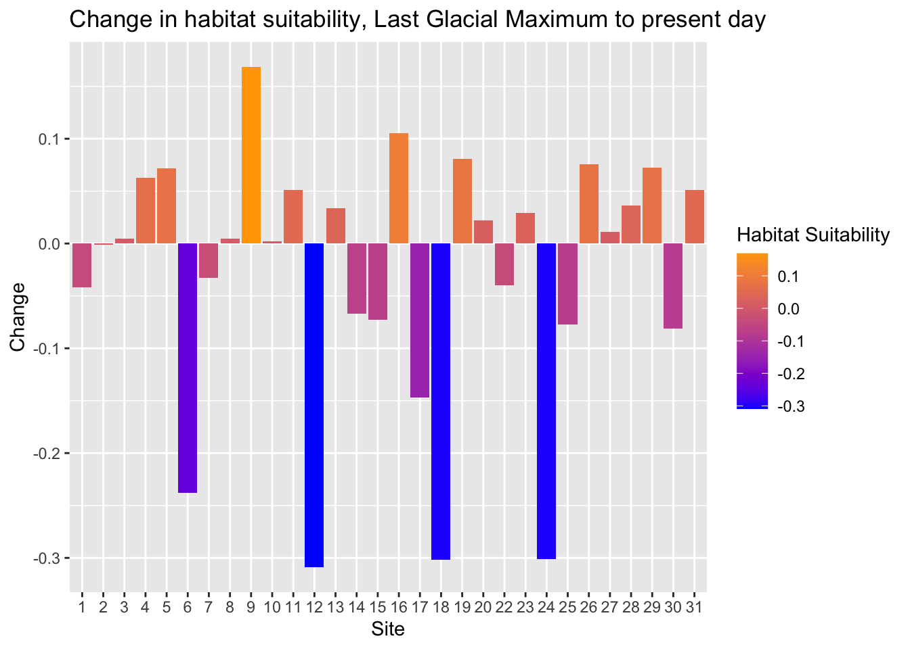
What are the predicted historical sex ratios at each of the locations based on the habitat suitability indices from the Last Glacial Maximum? Are there any trends that may be due to differences in climate?
The top model from our AIC table (sex ratio ~ habitat suitability) was used to predict the historical sex ratio at each site based on the estimated historical habitat suitability from the Last Glacial Maximum. A plot of the residuals from this model used on the historical data showed the residuals mostly evenly distributed above and below the zero residual line. This indicates it is likely the model is not consistently over- or under-predicting the response variable of historical sex ratio.
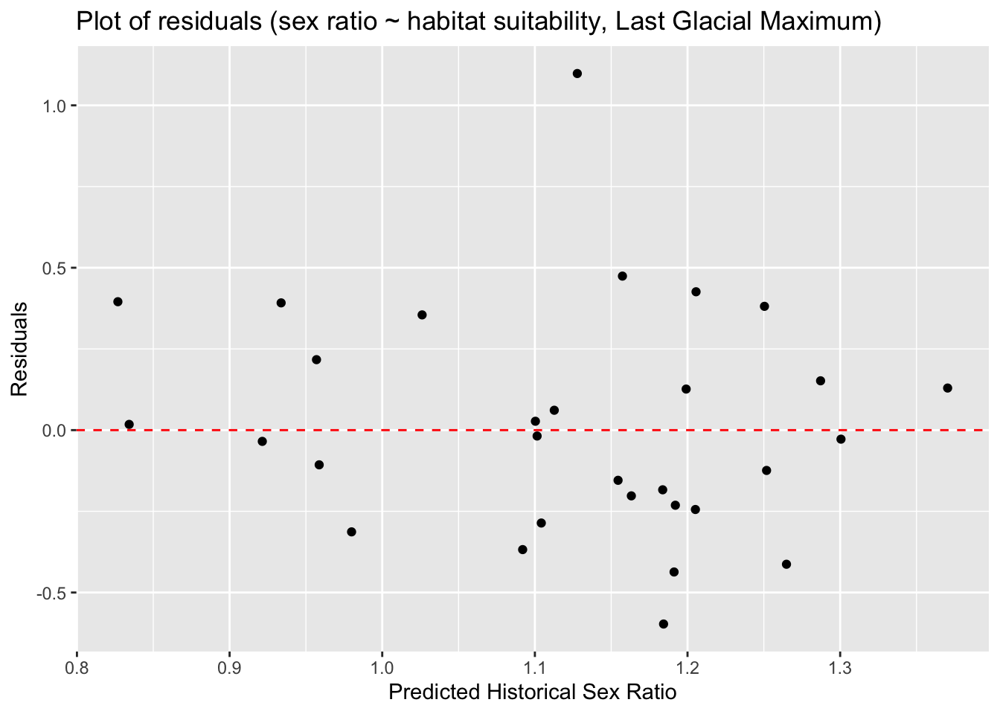
The maximum predicted sex ratio (male to female) was 1.37 and the minimum was 0.8268. This is a smaller range of sex ratio values than in our observed, present day data.
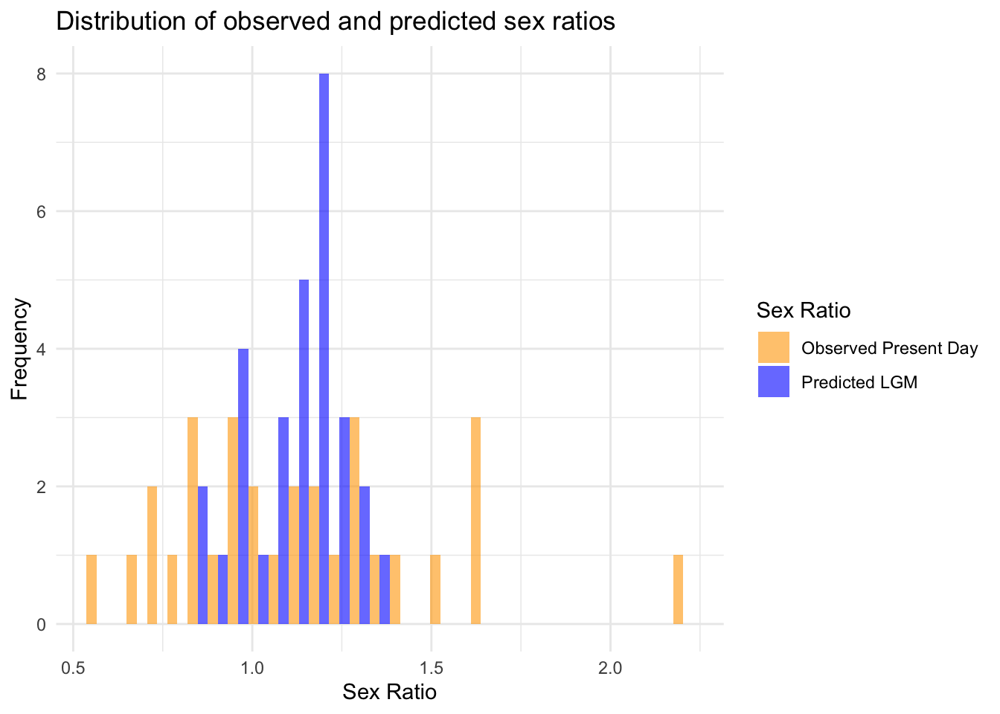
The habitat suitability at each site experienced change - some positive, some negative - between the Last Glacial Maximum and present day.
| Site | Habitat Suitability Change | Sex Ratio Change |
|---|---|---|
| 9 | 0.169 | -0.597 |
| 16 | 0.106 | -0.124 |
| 19 | 0.081 | -0.035 |
| 26 | 0.076 | -0.244 |
| 29 | 0.072 | 0.381 |
| 5 | 0.072 | -0.202 |
| 4 | 0.062 | -0.413 |
| 11 | 0.051 | -0.028 |
| 31 | 0.051 | -0.437 |
| 28 | 0.037 | -0.018 |
| 13 | 0.034 | 0.126 |
| 23 | 0.029 | -0.154 |
| 20 | 0.022 | 0.474 |
| 27 | 0.011 | -0.107 |
| 8 | 0.005 | 0.027 |
| 3 | 0.004 | 0.355 |
| 10 | 0.002 | 0.130 |
| 2 | -0.001 | 0.152 |
| 7 | -0.033 | 0.395 |
| 22 | -0.040 | 0.392 |
| 1 | -0.042 | 0.018 |
| 14 | -0.067 | -0.313 |
| 15 | -0.073 | -0.286 |
| 25 | -0.077 | -0.184 |
| 30 | -0.081 | -0.231 |
| 17 | -0.147 | 0.426 |
| 6 | -0.238 | -0.368 |
| 24 | -0.301 | 0.217 |
| 18 | -0.302 | 1.098 |
| 12 | -0.309 | 0.061 |
Maps of the overall habitat suitability in this region at the two time points (historical and present day) reveal these subtle changes in habitat suitability over time. The highly-suitable habitats across the entire region appear to shrink slightly between the Last Glacial Maximum and the present day, implying Araptus attenuatus may have had greater options for habitats in the past.
The sites showing the biggest decreases in habitat suitability since the Last Glacial Maximum are positioned along the coastlines - though not all coastline-adjacent sites showed decreases in habitat suitability. These coastal regions of the peninsula would have experienced a significant change in sea level over this time period. Globally during the Last Glacial Maximum sea levels were over 100 meters lower than they are today and overall the climate was much colder and drier.
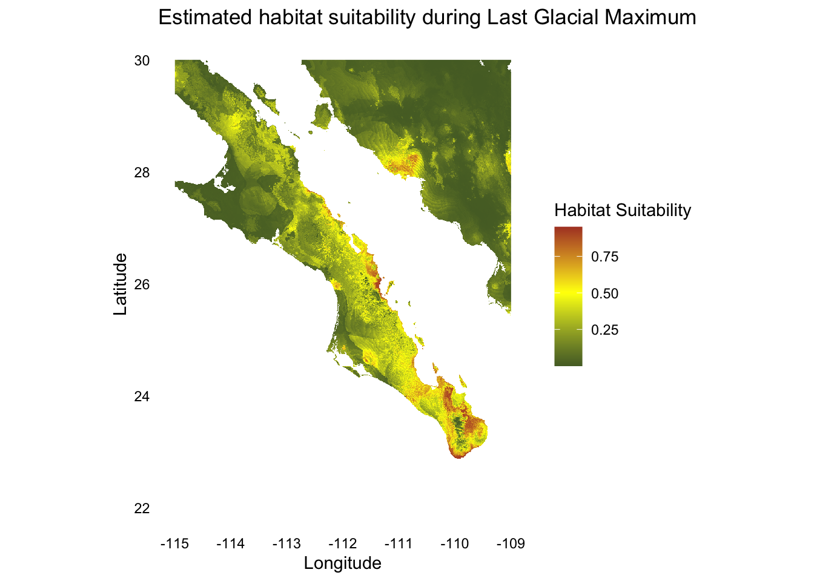
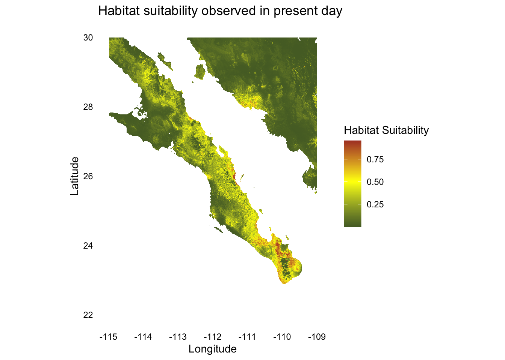
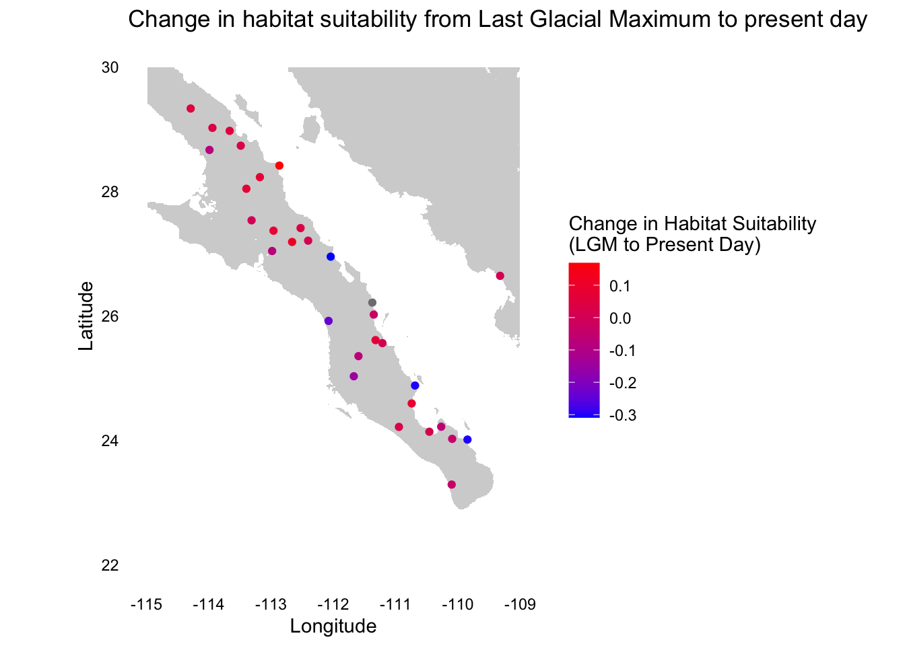
Many sites that experienced an increase in habitat suitability from past to present show a corresponding decrease in the male to female sex ratio. This is the effect anticipated from our linear regression model performed on the observed present day data. The site with the biggest increase in habitat suitability from the Last Glacial Maximum to present day - Site 9 - also shows the biggest decrease in male to female sex ratio (meaning the site showed more females than males in the present day compared to historically). The overall trend aligns with the expected result of our model however, it is not perfectly seen across all sites.
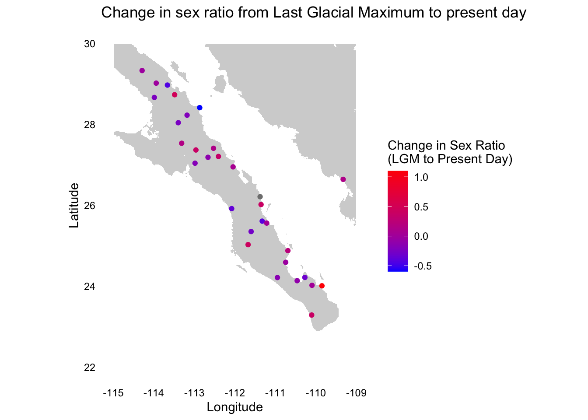